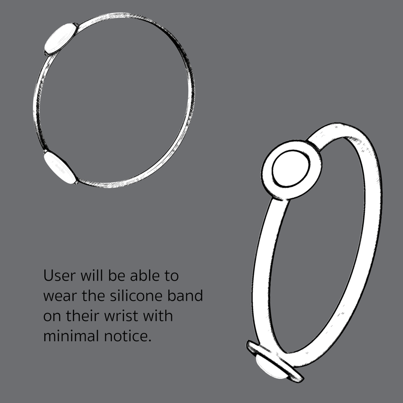
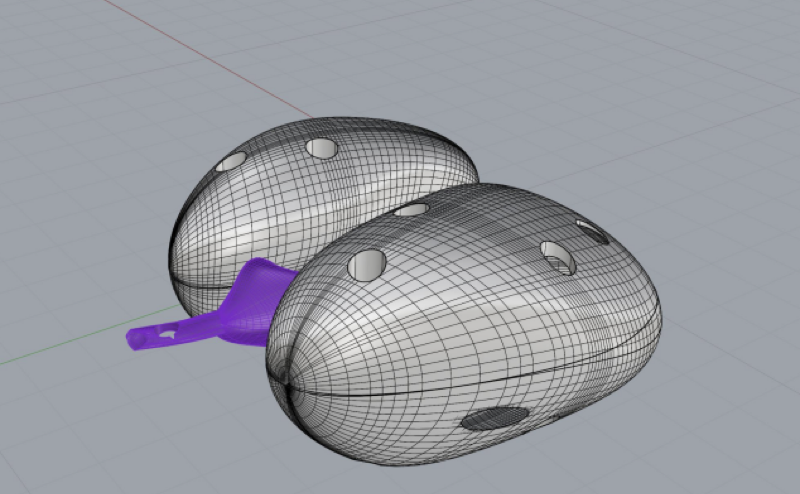
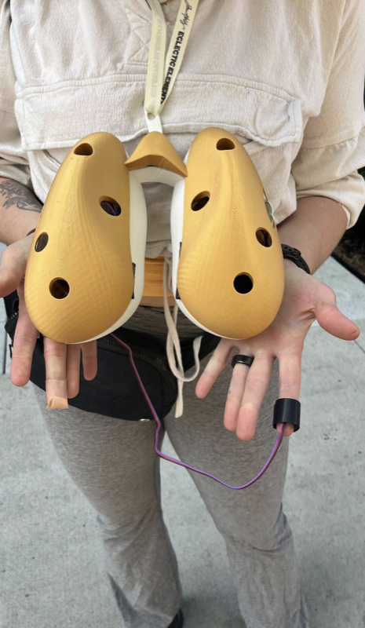
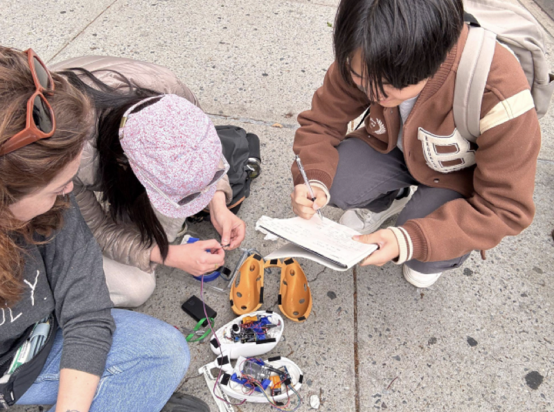
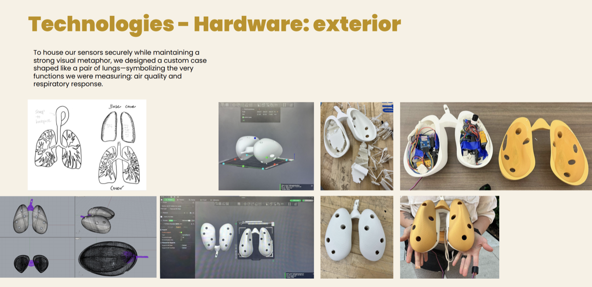
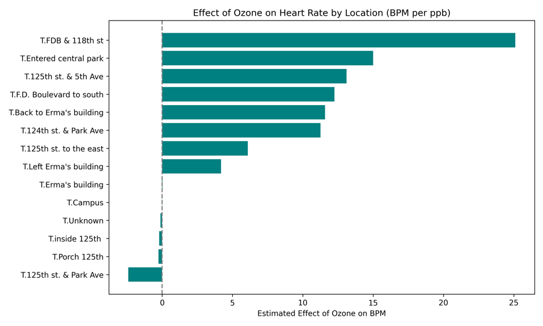
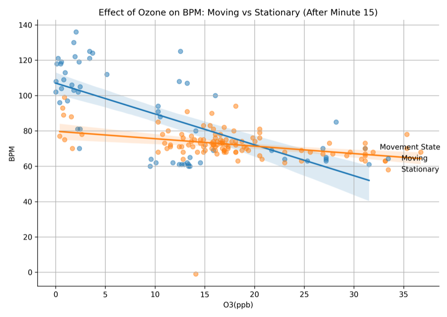
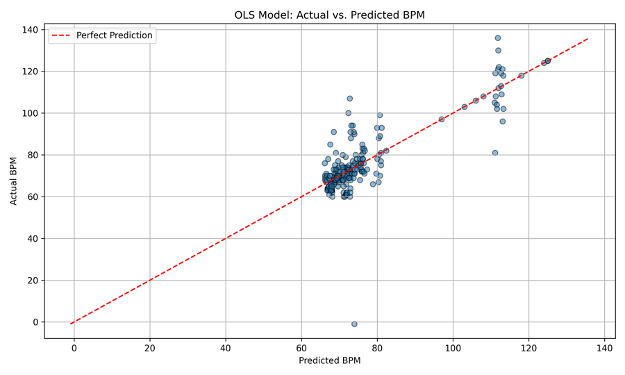
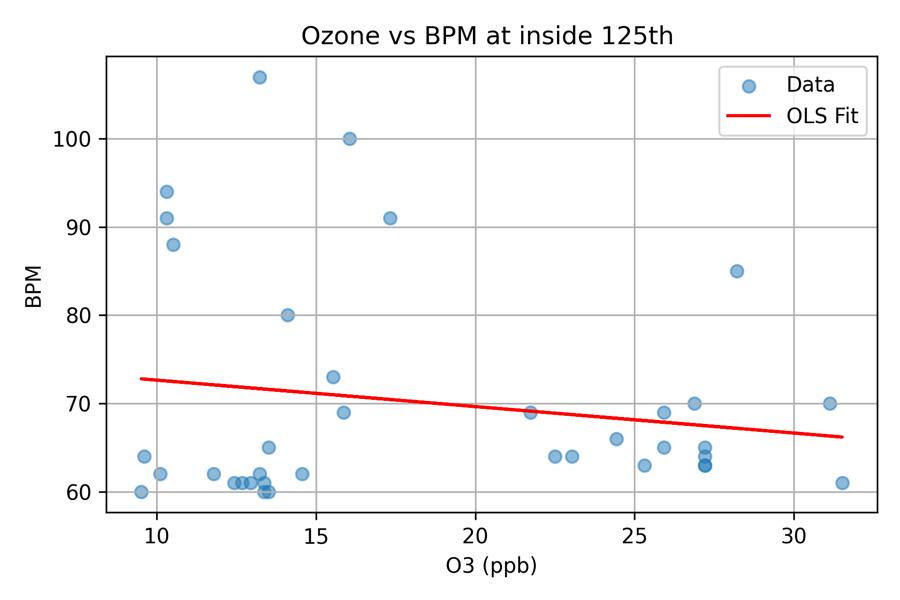
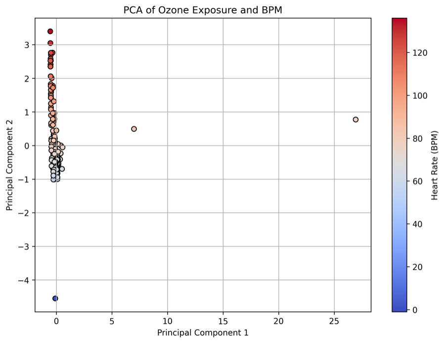

Data doesn't have to come from a database. Sometimes the most important signals come from building a sensor, strapping it on, and walking through a neighborhood — letting the body become an instrument of urban research.

This wasn't an off-the-shelf project. I designed a wearable sensing device from scratch — a silicone wristband housing an ozone sensor, heart rate monitor, GPS module, and ESP32 microcontroller. The housing was 3D modeled in Rhino as a pair of lungs and printed to hold all components in a compact, wearable form factor.
The goal: simultaneously measure what the city's air does to your body, in real time, as you move through it.





Wearing the sensor across different urban environments — indoors, on campus, on the street, underground — I collected paired biometric and environmental data. The GPS tracked location while the ozone sensor and heart rate monitor recorded simultaneous readings, creating a dataset that links where you are to what the air is doing to your body.

OLS regression and polynomial models quantified the relationship between ozone exposure and cardiac response, controlling for movement and location. The results showed statistically significant heart rate elevation during high-ozone outdoor exposure — particularly after sustained 15-minute periods.
Location-specific analysis confirmed that ozone-cardiac correlations were strongest at street level and weakest indoors, validating the sensing methodology against known exposure gradients.

OLS regression predicting heart rate from ozone exposure. The model captures the upward trend — higher ozone correlates with elevated cardiac response, especially after 15+ minutes of exposure.

Ozone-cardiac correlations are strongest at street level and weakest indoors — validating the sensor against known exposure gradients and confirming that location context is critical.

Principal component analysis separates movement-driven heart rate variation from ozone-driven variation, isolating the environmental signal from physical activity noise.
Sensing data feeds into predictive models, gets plotted on maps, and strengthens policy arguments for environmental justice.